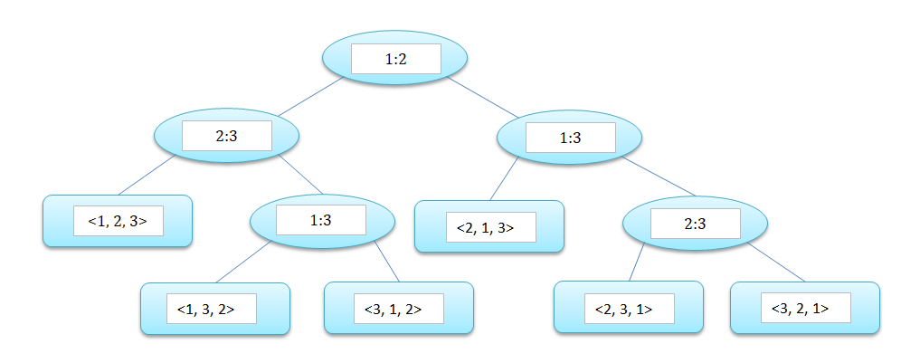

5.Sorting in linear time
1. 比较排序算法的下界
任何比较排序都可以被抽象为一棵决策树(decision tree)，下图为三个元素的简单插入排序的决策树。在决策树中，从根结点到任意一个可达叶结点中最长简单路径的长度，表示对应排序算法中最坏情况下的比较次数，即决策树的高度；输入规模 $n$ 对应的 $n!$ 中排列至少都应该出现在决策树的叶结点中。因此，决策树高度的下界就是比较排序运行时间的下界。  定理：在最坏情况下，任何比较排序都需要做 $\Omega(nlgn)$ 次比较。 设决策树高为 $h$, 具有 $l$ 个可达的叶结点。由 $n!\leq l\leq 2^h$，我们有 $h\geq lg(n!)=\Omega(nlgn)$ 由此，堆排序和归并排序都是渐进最优的比较排序算法。下面的排序算法都是线性时间，但它们都依赖于给定的输入数据需要满足一定条件。
2. 计数排序
假设 $n$ 个元素中的每一个都是在 $[0,\ k)$ 之间的整数，当 $k=O(n)$ 时，排序运行时间为 $\Theta(n)$。 COUNTING-SORT(A, B, k): A 为待排序数组，B 为结果数组，k 为整数范围。首先在临时数组 C 中统计小于等于相应下标的对应的数的个数，然后根据其确定 A 中每个元素的最终位置。
void CountingSort(int A[], int B[], int k, int len) {
int C[k];
int i;
for (i = 0; i < k; i++) {
C[i] = 0;
}
for (i = 0; i < len; i++) {
C[A[i]]++;
}
for (i = 1; i < k; i++) {
C[i] += C[i - 1];
}
for (i = len - 1; i >= 0; i--) {
B[C[A[i]] - 1] = A[i];
C[A[i]]--;
}
}
3. 基数排序
RADIX-SORT(A, d): 从最低有效位开始，对每个数按照数位进行排序，如此迭代，其中 d 是数字的位数。基数排序的关键在于，对一位数的排序算法必须是稳定的，在排序高位时才不会改变低位已确定的次序。
void RadixSort(int A[], int d, int len) {
int i;
for (i = 0; i < d; i++) {
CountingSortOnRadix(A, 10, len, i);
}
}
void CountingSortOnRadix(int A[], int k, int len, int digit) {
int C[k];
int B[len];
int i;
for (i = 0; i < k; i++) {
C[i] = 0;
}
for (i = 0; i < len; i++) {
C[getDigit(A[i], digit)]++;
}
for (i = 1; i < k; i++) {
C[i] += C[i - 1];
}
for (i = len - 1; i >= 0; i--) {
B[C[getDigit(A[i], digit)] - 1] = A[i];
C[getDigit(A[i], digit)]--;
}
for (i = 0; i < len; i++) {
A[i] = B[i];
}
}
int getDigit(int num, int digit) {
int res = 1;
int j;
for (j = 1; j <= digit; j++) {
res *= 10;
}
return num / res % 10;
}
4. 桶排序
假设输入的数据服从均匀分布，则平均情况下桶排序的时间代价为 $O(n)$。 BUCKET-SORT(A): 把区间 $[0,\ 1]$ 十等分，并构造一个链表的数组 $B$ ，数组每个元素对应一个被等分的区间。对每个链表使用插入排序，最后合并链表即完成排序。
typedef struct node {
double val;
struct node *pred;
struct node *succ;
}Node;
// ...
Node* BucketSort(int A[], int len, int maxDigit) {
Node *B[10];
int i, j;
// init a new empty list of HEADs
for (i = 0; i < 10; i++) {
B[i] = (Node*) malloc(sizeof(Node));
B[i]->pred = B[i]->succ = B[i];
}
// insert element into circular linked list
for (i = 0; i < len; i++) {
double val = A[i] / (double)maxDigit;
Node *des = B[(int)(val * 10)];
Node *t = (Node*) malloc(sizeof(Node));
t->val = val;
t->pred = des;
t->succ = des->succ;
des->succ->pred = t;
des->succ = t;
}
for (i = 0; i < 10; i++) {
InsertionSort(B[i]);
}
return Concatenate(B);
}
Node* Concatenate(Node** B) {
Node* head = (Node*) malloc(sizeof(Node));
head->pred = NULL;
int i;
Node *curr = head;
for (i = 0; i < 10; i++) {
if (B[i]->succ != B[i]) {
curr->succ = B[i]->succ;
curr->succ->pred = curr;
curr = B[i]->pred;
curr->succ = NULL;
}
}
return head;
}
void InsertionSort(Node *head) {
head->val = -(1<<30);
Node *i;
Node *firstNode = head->succ;
for (i = firstNode->succ; i != head; ) {
Node *t = i->pred;
while (i->val < t->val) {
t = t->pred;
}
Node *j = i;
i = i->succ;
j->pred->succ = j->succ;
j->succ->pred = j->pred;
j->succ = t->succ;
j->pred = t;
t->succ->pred = j;
t->succ = j;
}
}
$ X_{ij}= \begin{cases} 1& if\ A[j]\ falls\ into\ Bucket[i]\\ 0& else \end{cases} $，那么由均匀分布，$P(X_{ij}=1)=1/n$。
$ \begin{aligned} E[T(n)] & = E[\Theta(n)+\sum_{i=0}^{n-1}O(n_i^2)] \\ & = \Theta(n)+\sum_{i=0}^{n-1}E[O(n_i^2)]\\ & = \Theta(n)+\sum_{i=0}^{n-1}O(E[n_i^2]) \end{aligned} $ $ \begin{aligned} E[n_i^2] & = E[(\sum_{j=1}^{n} X_{ij})^2] = \Theta(n)+\sum_{i=0}^{n-1}E[O(n_i^2)] = E[\sum_{j=1}^{n} \sum_{k=1}^{n} X_{ij}X_{ik} ]\\ & = E[\sum_{j=1}^{n}X_{ij}^2 + \sum_{j=1}^{n} \sum_{k=1,\ k \ne j}^{n} X_{ij}X_{ik}] \\ &= \sum_{j=1}^{n}E[X_{ij}^2] + \sum_{j=1}^{n} \sum_{k=1,\ k \ne j}^{n} E[X_{ij}X_{ik}]\\ & = \sum_{j=1}^{n} \frac{1}{n} + \sum_{j=1}^{n} \sum_{k=1,\ k \ne j}^{n} \frac{1}{n^2} \\ & = 2 - \frac{1}{n} \end{aligned} $ 最后，由 $\Theta(n)+n·O(2-1/n)=\Theta(n)$，所以桶排序的期望时间为线性的。当数据不服从均匀分布，如果所有桶的大小的平方和与元素总数成线性关系，那么桶排序也是线性时间。